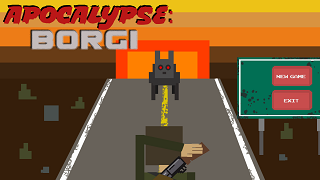
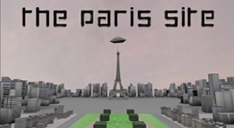
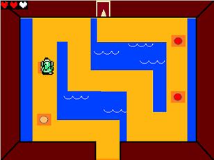
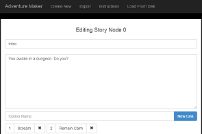
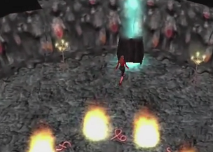

Education
I am an Honors Computing Science student at the University of Alberta, currently finishing my degree (Expected graduation in Spring 2015). I have also completed the Certificate in Computer Game Development by takeing a specific susbset of courses related to games and game creation. You can find work from this program and more in the Projects tab.
Industry Experience
Past employers include the Provincial Government of Alberta department of Energy, GE Intelligent platforms, and the University of Alberta, all in software positions. I am familiar with many technologies, including but not limited to C++, Java, HTML5, Javascript, CSS, C#, JQuery, Git and more. You can find more on my LinkedIn profile.
Apocalypse: Borgi

Slated for an April 2015 release, Apocalypse: Borgi is a tower defense-esque game demo that has a large narrative component. Players encounter generated story scenarios which can affect the party's resources, stats, and more and make choices to determine their fate. During the night time, players are transported to survival levels where they can build structures and manipulate theri crew in real time to hold out against and army of evil mechanized dogs. Takes inspiration from Faster than Light, Oregon Trail, and King of Dragon Pass.
The Paris Site

Made in 2015, The Paris Site is a 3D-animated science fiction short film. The models and animations were made using Autodesk 3DS Max. You can watch the full film on Youtube.
The Legend of Zelda: A Link to the Scratch

Made in 2014, the Legend of Zelda: A Link to the scratch is a short game made in MIT's Scratch. It is made using sprites and gameplay concepts from Nintendo's Oracle of Ages/Seasons games. The player talks to an NPC, navigates through a top-down world, must solve puzzlees and fight enemies with his trusty sword. Upon navigation of the dungeon, Link fights a boss who has kidnapped Princess Zelda. This is an unauthorized fan game and is in no way affiliated with Nintendo, Capcom or any of their subsidiaries.
Adventure Maker

Made in 2013, Adventure maker is a web application that allows you to create, edit, save, and play through Choose Your Own Adventure style stories. It is written entirely client-side, meaning that it can be run locally without an internet connection. Stories can be saved to disk, shared, and edited later. Adventure Maker exports stories as a collection of beautifully rendered web pages which are playable in any modern browser. Try it out now.
Dreamwalker

Made in 2011 for the University of Alberta's CMPUT 250 class, Dreamwalker is a mod for BioWare's Neverwinter Nights. The player finds herself in a world where the stuff of dreams and reality begin to merge, and she must attempt to save both worlds. Watch the full trailer here. Dreamwalker was nominated for an award for Excellence in Writing and Story.